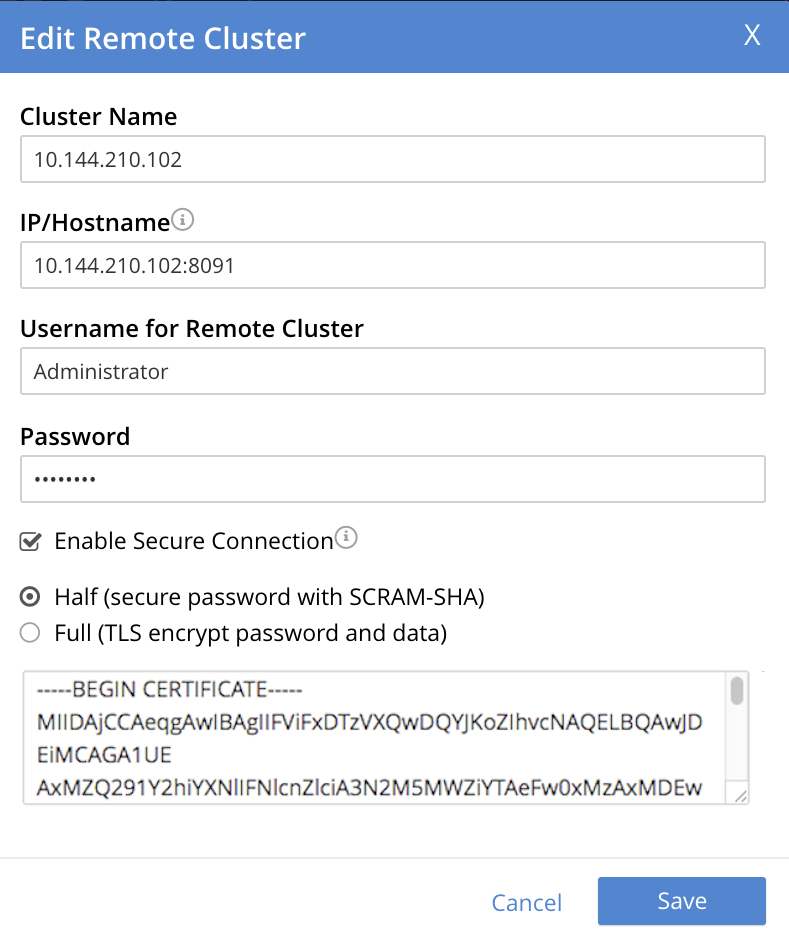

Enable Half-Secure Replications
Half-Secure replication secures the specified password only: it does not secure data.
Understanding Half-Secure Replications
A Half secure replication secures the specified password only: it does not secure data. The password is secured:
-
By hashing with SCRAM-SHA, when the destination cluster is running Couchbase Enterprise Server 5.5 or later.
-
By TLS encryption, when the destination cluster is running a pre-5.5 Couchbase Enterprise Server.
The root certificate of the destination cluster must be provided, for a successful TLS connection to be achieved. If this certificate is provided and a SCRAM-SHA connection is achieved, the certificate is ignored. The root certificate can be obtained by accessing the Root Certificate tab, on the Security screen for the remote cluster: copy the certificate from the interactive panel in which it appears.
Note that replication-security is established per reference: this means that the security level assigned to the reference (which specifies a remote cluster) is automatically assigned to all replications based on that reference.
Before attempting to enable half-secure replications, see the important information provided in SCRAM SHA and XDCR. Then, proceed as described below.
Examples on This Page
The examples in the subsections below show how to half-secure a replication; using the UI, the CLI, and the REST API respectively. As their starting-point, the examples assume the scenario that concluded the page Resume a Replication.
Enable Half-Secure Replications with the UI
-
Access Couchbase Web Console. Left-click on the XDCR tab, in the right-hand navigation menu.

This brings up the XDCR Replications screen. The upper part of the main panel, entitled Remote Clusters, lists the currently defined reference.
-
Left-click on the Edit button, located at the right-hand side of the row for the reference:

This brings up the partially filled Edit Remote Cluster dialog:

-
In the dialog, enter the Password for the remote cluster, and check the Enable Secure Connection checkbox. The dialog now expands vertically:

The Half radio button is checked by default: this means that half-secure replication is selected.
-
To achieve half-secure connections with pre-5.5 versions of Couchbase Enterprise Server, copy and paste the root certificate for the destination cluster into the interactive panel, below the radio buttons. (This certificate can be found under the Root Certificate tab of the Couchbase Web Console Security screen: copy it there, and paste it here.)
The dialog now appears approximately as follows:
 -
Left-click on the Save button, at the lower-right of the dialog.
The concludes UI-based enablement of half-secure replication. From this point, any existing replication based on the edited reference is continued in half-secure form. All new replications based on the edited reference will be started in half-secure form.
Enable Half-Secure Replications with Add Remote Cluster
Left-clicking on the ADD REMOTE button, located at the upper-right of the XDCR Replications screen, brings up the Add Remote Cluster dialog. As shown in Create an XDCR Reference with the UI, this is used to create a new reference. The field-content of this dialog is identical to that of the Edit Remote Cluster dialog, just examined: therefore it too can be used to establish security for the reference and its corresponding replications.
Enable Half-Secure Replications with the CLI
To create and edit a reference, and attribute to it a security-level, use the xdcr-setup command.
Use of this command to create a non-secure reference is already demonstrated in Create an XDCR Reference with the CLI.
From the starting-point given above, in Examples on this Page, to create a new reference, to a cluster named 10.142.180.103, specifying half-secure replications, enter the following:
couchbase-cli xdcr-setup -c 10.142.180.101 \ -u Administrator \ -p password \ --create \ --xdcr-cluster-name 10.142.180.103 \ --xdcr-hostname 10.142.180.103 \ --xdcr-username Administrator \ --xdcr-password password \ --xdcr-secure-connection half \ --xdcr-certificate /Users/username/cert/remote-ca.pem
The --create flag specifies that the command is being used to create a new reference.
The --xdcr-username and --xdcr-password are those of the remote cluster.
The --xdcr-certificate is the root certificate of the remote cluster, specified as a local pathname.
If successful, the call returns the following:
SUCCESS: Cluster reference created
The new reference is half secure, as will be all replications based on it.
To edit the existing reference 10.142.180.101:8091, and thereby change it from its original non-secure state to one that is half-secure, enter the following:
couchbase-cli xdcr-setup -c 10.142.180.101 \ -u Administrator \ -p password \ --edit \ --xdcr-cluster-name 10.142.180.102 \ --xdcr-hostname 10.142.180.102 \ --xdcr-username Administrator \ --xdcr-password password \ --xdcr-secure-connection half \ --xdcr-certificate /Users/username/cert/remote-ca.pem
The --edit flag specifies that the command is being used to edit an existing reference.
If the command is successful, the following is displayed:
SUCCESS: Cluster reference edited
The edited reference and its assocated replications are now half-secure.
For more information, see the complete reference for xdcr-setup.
Enable Half-Secure Replications with the REST API
To create or edit a reference, and attribute to it a particular security-level, use the /pools/default/remoteClusters URI.
Reference-creation with this URI is already demonstrated in Create an XDCR Reference with the REST API: note that this example used the demandEncryption flag with a value of zero, to specify non-secure replications.
From the starting-point given above in Examples on this Page, to create a new reference, to a cluster named 10.142.180.103, specifying half-secure replications, enter the following:
curl -X POST -u Administrator:password http://10.142.180.101:8091/pools/default/remoteClusters \ -d "name=10.142.180.103" \ -d "hostname=10.142.180.103:8091" \ -d "username=Administrator" \ -d "password=password" \ -d "demandEncryption=true" \ -d "encryptionType=half" \ --data-urlencode "certificate=$(cat /Users/myself/cert/root/ca.pem)"
The username and password specified are those of the remote cluster.
Note that the demandEncryption flag is set to true, and the encryptionType flag specifies half.
The optional --dataurlencode flag specifies the local path to the root certificate for the remote cluster: this creates half-secure connections to remote clusters running pre-5.5 versions of Couchbase Enterprise Server.
Output from a successful call, when formatted, is as follows:
{
"certificate": "-----BEGIN CERTIFICATE-----\nMIIDlzCCAn6ECu1yLb......
....Lx/0WA\nDwNqXw/Cd6CIcnc=\n-----END CERTIFICATE-----",
"deleted": false,
"demandEncryption": true,
"encryptionType": "half",
"hostname": "10.142.180.102:8091",
"name": "10.142.180.102",
"secureType": "half",
"uri": "/pools/default/remoteClusters/10.142.180.102",
"username": "Administrator",
"uuid": "fe8df4ff66e7e8121c249de13fb3324a",
"validateURI": "/pools/default/remoteClusters/10.142.180.102?just_validate=1"
}
The secureType field indicates that the new reference is half secure.
To edit the existing reference 10.142.180.101:8091, and thereby change it from its original non-secure state to one that is half-secure, supporting only clusters that are at least version 5.5, enter the following:
curl -X POST -u Administrator:password http://10.142.180.101:8091/pools/default/remoteClusters/10.142.180.102 \ -d "name=10.142.180.102" \ -d "hostname=10.142.180.102:8091" \ -d "username=Administrator" \ -d "password=password" \ -d "demandEncryption=true" \ -d "encryptionType=half"
Note that the URI is here extended, to include the name of the remote cluster.
(If this is not included, the command is interpreted as intended to create rather than to edit, and fails with a Duplicate cluster names are not allowed message.)
The demandEncryption flag is specified as true, and the encryptionType is half.
Output from a successful call, when formatted, appears as follows:
{
"deleted": false,
"demandEncryption": true,
"encryptionType": "half",
"hostname": "10.142.180.102:8091",
"name": "10.142.180.102",
"secureType": "half",
"uri": "/pools/default/remoteClusters/10.142.180.102",
"username": "Administrator",
"uuid": "fe8df4ff66e7e8121c249de13fb3324a",
"validateURI": "/pools/default/remoteClusters/10.142.180.102?just_validate=1"
}
The secureType field indicates that the edited reference is now half secure.
For more information on using the REST API to create half-secure connections, see the complete reference, at Create and Edit a Reference.
Next Steps
Replication can be fully secured; meaning that both the password and the data are encrypted with TLS. See Enable Fully Secure Replications.